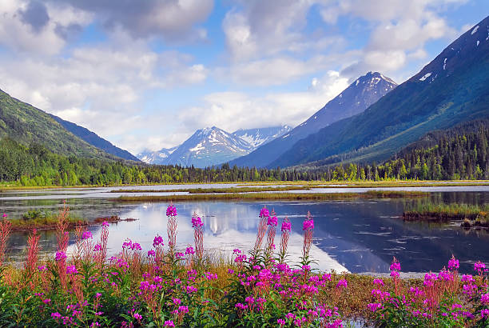

Alaska is the largest state in the United States and is known for its vast wilderness, dramatic landscapes,
and abundant wilderness. From towering mountains to massive glaciers, Alaska offers some of the most
breathtaking scenery in the world. It is a destination that attracts adventurers, photographers, and nature lovers alike.
Must See Spots
Denali National Park
Glacier Bay National Park
Anchorage
Kenai Fjords National Park
Fairbanks (The Northern Lights)

A breathtaking view of Alaska's rugged mountains and wilderness.
Visitor Tips
Dress in layers to prepare for changing weather.
Plan Travel distances carefully, as locations can be very far apart.
Bring a camera to capture wildlife and the amazing scenery.
Please respect nature and follow ALL of the park safety guidelines.
Alaska was a life-changing adventure filled with unforgettable
landscapes and moments of pure awe. It is truly a destination that makes you appreciate the
power of nature.